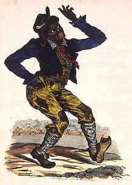
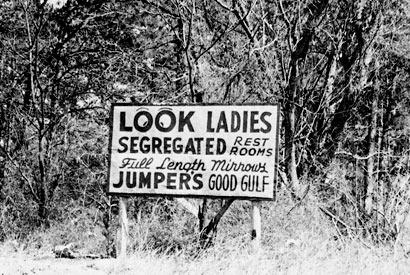
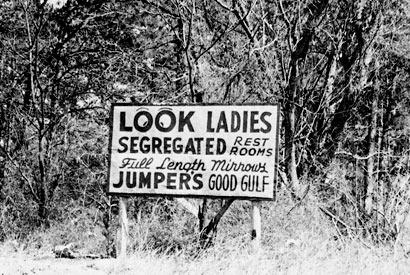

What were Jim Crow laws, and where did they come from?

What were the Jim Crow Laws?
The Jim Crow laws were state and local statutes enacted between the late-1870s and the mid-1960s, mainly in the Southern states to enforce racial segregation. An example of this is that many states implemented laws to get rid of African Americans right to vote.
They mandated the physical separation of races in almost all public and private aspects of life, including schools, hospitals, libraries, parks, transportation, and restaurants.
Under the claim of "separate but equal," Jim Crow laws provided a legal basis for systemic discrimination, with facilities for Black Americans consistently inferior and/or underfunded.
The laws often included strict, demeaning "etiquette" that reinforced a racial hierarchy, such as requiring black individuals to show respect to white people.
Defying these laws came with severe consequences, and those who challenged the system faced fines, arrest, jail sentences, and the threat of violence or death, often at the hands of white supremacist organizations like the KKK.
The term "Jim Crow" originated from a popular 19th-century singer show character, a blackface caricature that mocked African Americans and became a belittling label for black people.
The legal origins can be traced to the Black Codes, strict laws passed after the Civil War to restrict the freedom of formerly enslaved people by limiting their employment and land ownership.
The end of the Reconstruction era in the late-1870s allowed white supremacists to regain political control of the South and dismantle the civil rights gains made by African Americans, leading to a new system of laws designed to reestablish white supremacy.
The Supreme Court's 1896 ruling in Plessy v. Ferguson provided federal legal justification for segregation by establishing the "separate but equal" doctrine, which cemented the legality of Jim Crow laws for decades.
The system was officially dismantled by legislation by the Civil Rights Movement, particularly the Civil Rights Act of 1964 and the Voting Rights Act of 1965.

 
